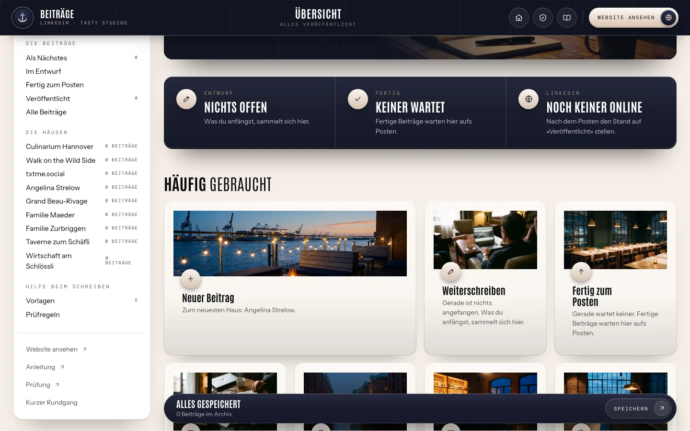
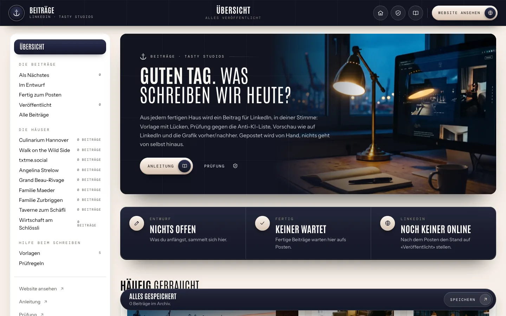
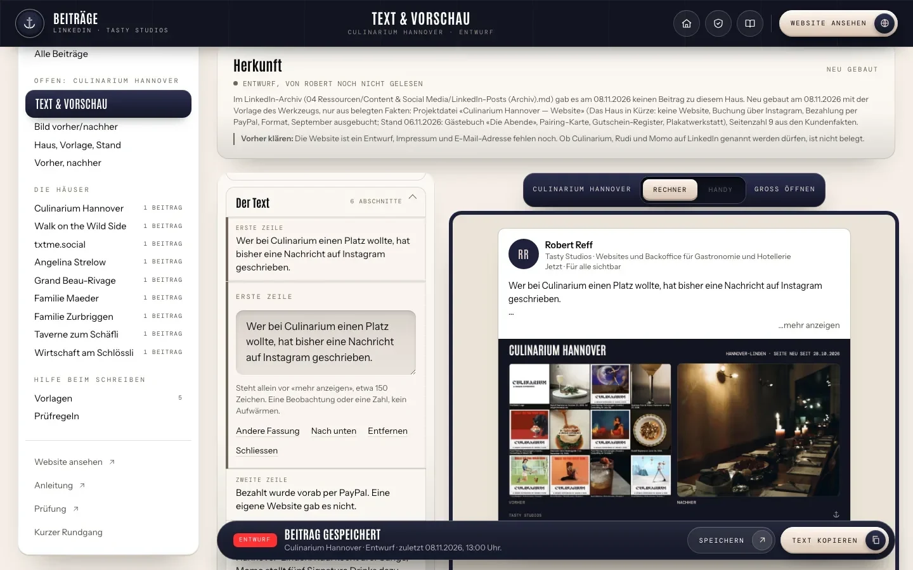
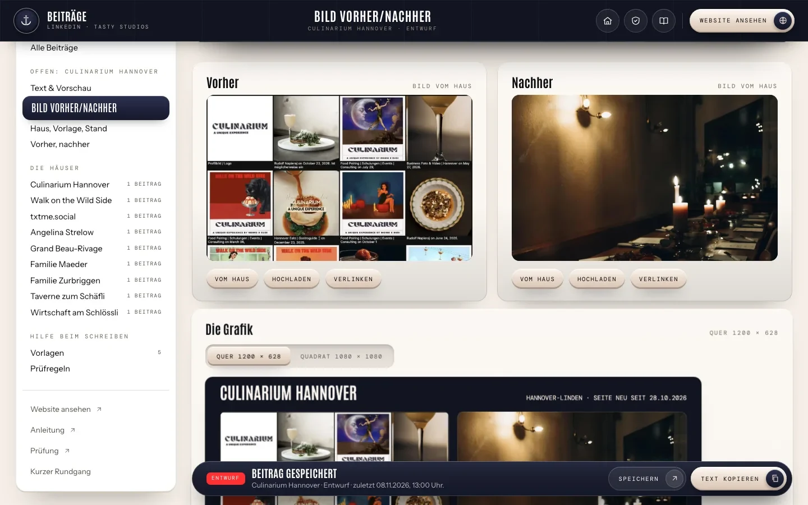
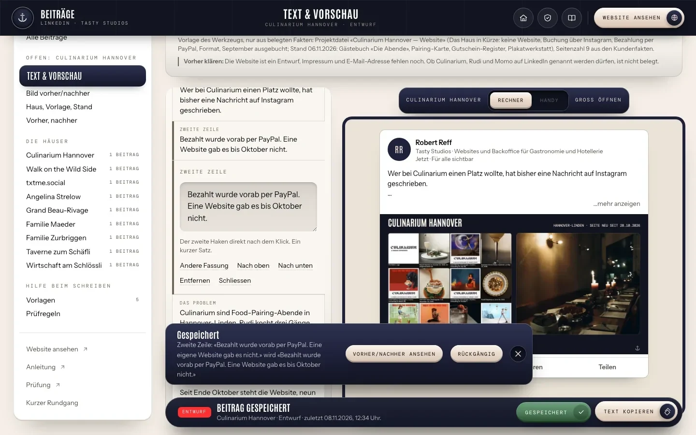
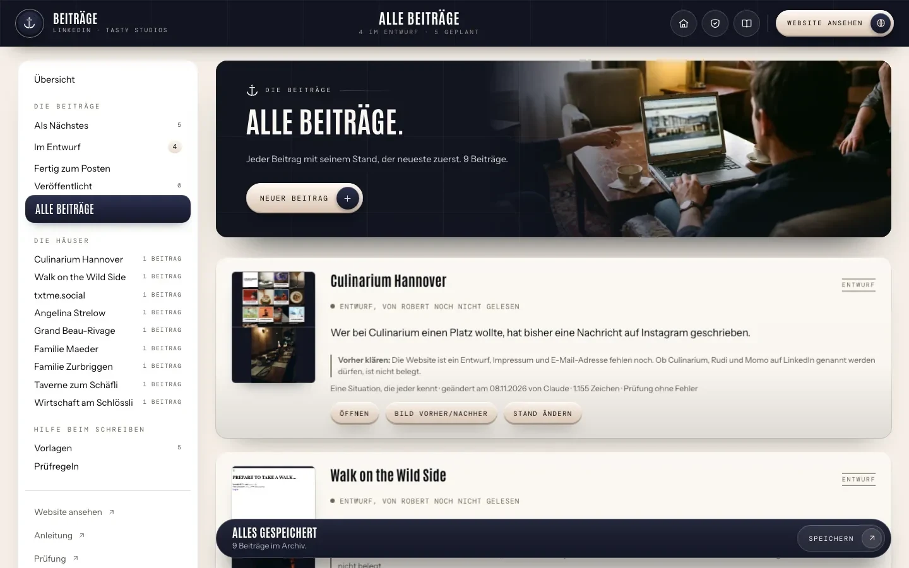

Beiträge für LinkedIn
So wird aus einem Haus ein Beitrag.
Mit «Beiträge» machst du aus jedem fertigen Haus einen Beitrag für LinkedIn, in deiner Stimme. Die Hilfe kommt aus festen Vorlagen und einer Prüfliste, nicht aus einer KI. Nichts geht von selbst hinaus: Was du schreibst, wartet, bis du speicherst, und gepostet wird von Hand auf LinkedIn.
1
Die Übersicht
Oben siehst du, wie viele Beiträge im Entwurf liegen, wie viele fertig aufs Posten warten und wann zuletzt einer online ging. Darunter «Häufig gebraucht» mit sieben Kacheln: neuer Beitrag, weiterschreiben, fertig zum Posten, Bild vorher/nachher, was die Prüfung meldet, Vorlagen ansehen und alle Beiträge. Ganz unten jedes Haus mit seinem Bild vorher und nachher.
Links im Rand stehen die Beiträge nach Stand, der gerade offene Beitrag, die Häuser und die Hilfe beim Schreiben. Am Handy öffnet «Bereiche» oben den Rand.

2
Ein neuer Beitrag
«Neuer Beitrag» nimmt das neueste Haus, seine Bilder und was dort anders ist, und baut den Text aus der Vorlage «Eine eigene Zahl». Unter «Haus, Vorlage, Stand» wählst du ein anderes Haus oder eine andere Vorlage und baust den Text neu.
Der Aufbau ist fest: erste Zeile, zweite Zeile, Problem, was anders ist, Schlusssatz, Frage. Was das Werkzeug nicht weiss, steht als Lücke in eckigen Klammern da.

3
Schreiben und prüfen
Unter «Text & Vorschau» steht links der Text in Abschnitten, rechts der Beitrag, wie er auf LinkedIn aussieht, am Rechner oder am Handy. Klick auf einen Abschnitt: darunter öffnet sich das Feld, die Vorschau schreibt beim Tippen mit. «Andere Fassung» holt den nächsten Vorschlag aus der Vorlage, «Nach oben» und «Nach unten» stellen um.
Ganz oben links steht die Prüfung: was raus muss, was du ansehen solltest, und Hinweise zur Länge. Ein Klick auf einen Fund markiert die Stelle im Feld und in der Vorschau.

4
Bild vorher/nachher
Für jedes Haus liegen ein Bild der alten und eines der neuen Seite bereit. «Hochladen» nimmt ein eigenes Bild (PNG, JPG, WebP, SVG oder GIF, höchstens 8 MB), «Verlinken» holt eines von einer Adresse. Daraus baut das Werkzeug die Grafik, quer für den Beitrag oder quadratisch.
«Grafik speichern» legt sie als PNG in deine Downloads. Auf LinkedIn kommt sie zusammen mit dem Text.

5
Speichern, vergleichen, zurücknehmen
Solange etwas nicht gespeichert ist, steht unten «Eingaben noch nicht gespeichert» und der Knopf «Speichern» leuchtet. Nach dem Speichern erscheint eine Quittung mit «Vorher/nachher ansehen» und «Rückgängig». Tastenkürzel: Cmd + S am Mac, Strg + S unter Windows.
«Vorher, nachher» zeigt jede Eingabe neben dem gespeicherten Stand. Auch ein gelöschter Beitrag kommt über «Rückgängig» in seiner Quittung zurück.

6
Posten und den Stand nachführen
Ist ein Beitrag geprüft, stellst du ihn auf «Fertig». «Text kopieren» legt den ganzen Text in die Zwischenablage. Auf LinkedIn einfügen, Grafik dazu, einen Link in den ersten Kommentar.
Danach den Stand auf «Veröffentlicht» stellen und speichern. Das Werkzeug selbst stellt nie etwas online. Unter «Alle Beiträge» steht jeder Beitrag mit seinem Stand und links dem Bild vorher und nachher; ein Klick aufs Bild öffnet «Bild vorher/nachher».

7
Wenn etwas nicht klappt
Jede Meldung trägt den Knopf «Was tun?». Er führt zur Prüfung: Sie läuft auch dann, wenn das Werkzeug selbst nicht startet, sagt, was los ist, und was zu tun ist. Gespeichertes geht dabei nie verloren.